Un museo en la vieja estación
El Museo Ferroviario «Bibiano Gómez» está en la antigua estación de Javier de Viana, sobre la Ruta 30, en el kilómetro 96, a 28 kilómetros de la ciudad de Artigas. Abrió el 23 de mayo de 2025.
Es mucho más que una antigua estación: es un espacio que rescata recuerdos, conserva testimonios y mantiene viva una parte fundamental de la identidad del pueblo.
Un nombre con historia
Lleva el nombre de Bibiano Gómez, el último jefe de estación, protagonista del momento en que sonó la última campanada del ferrocarril, el 2 de enero de 1988.
Su nombre es también un homenaje a todos los ferroviarios que pasaron por la estación y que, con su trabajo, su dedicación y sus vivencias, forman parte de la historia y la identidad de Javier de Viana.
Un pueblo hecho por el tren
En 1893 se instaló aquí, en tierras de Froilán Rodríguez, la estación de trenes «Tres Cruces». A su alrededor creció el pueblo que hoy lleva el nombre de Javier de Viana, sobre la margen norte del arroyo Tres Cruces Grande.
La estación está en el ramal que une Baltasar Brum con la ciudad de Artigas. Su viejo cartel todavía marca la distancia a la Estación Central, en Montevideo: kilómetro 780,287. En enero de 2025, AFE entregó a la Intendencia de Artigas telégrafos, teléfonos y otros equipos de la estación que había conservado su último encargado, para crear un museo del ferrocarril.
Qué podemos encontrar
En el museo se puede conocer la historia del ferrocarril, observar fotografías, herramientas y objetos antiguos, y descubrir cómo era el transporte ferroviario de antes.
Visitas
- El museo no tiene horario de apertura fijo: las visitas se coordinan. El CEI Javier de Viana mantiene un vínculo permanente con el museo y acompaña este espacio de memoria.
- De lunes a viernes, durante el año escolar: con el CEI Javier de Viana, al 4770 2828.
- Sábados, domingos y feriados: con Bibiano Gómez (099 910 218) o con José Carlos Martínez (098 162 005).
Fotos
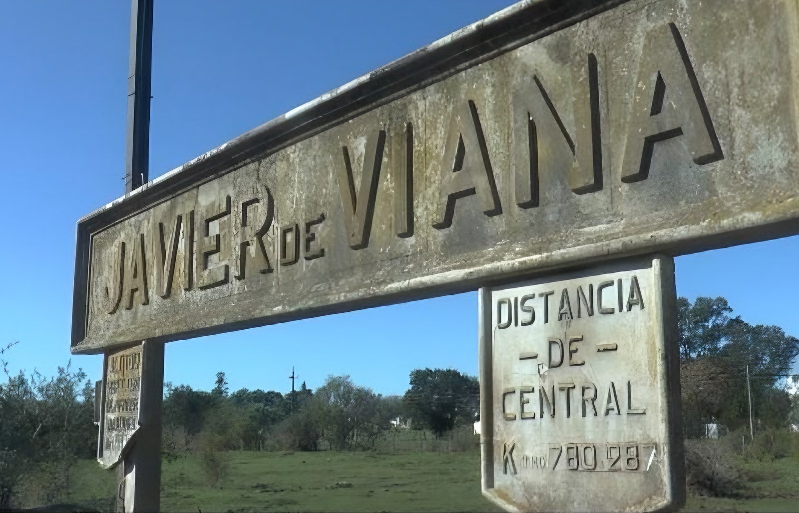
Foto: CEI Javier de Viana
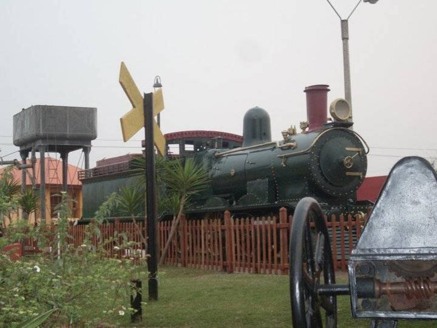
Foto: CEI Javier de Viana
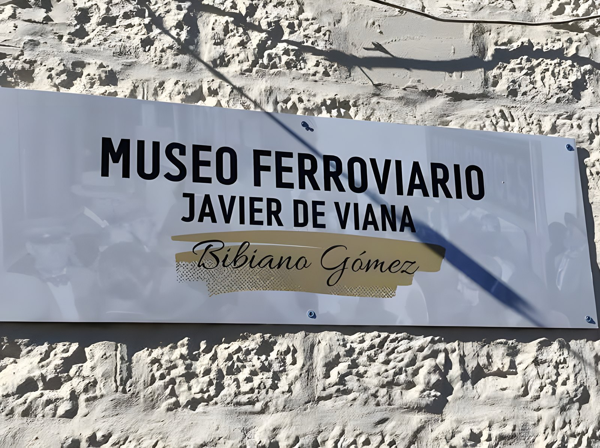
Foto: CEI Javier de Viana
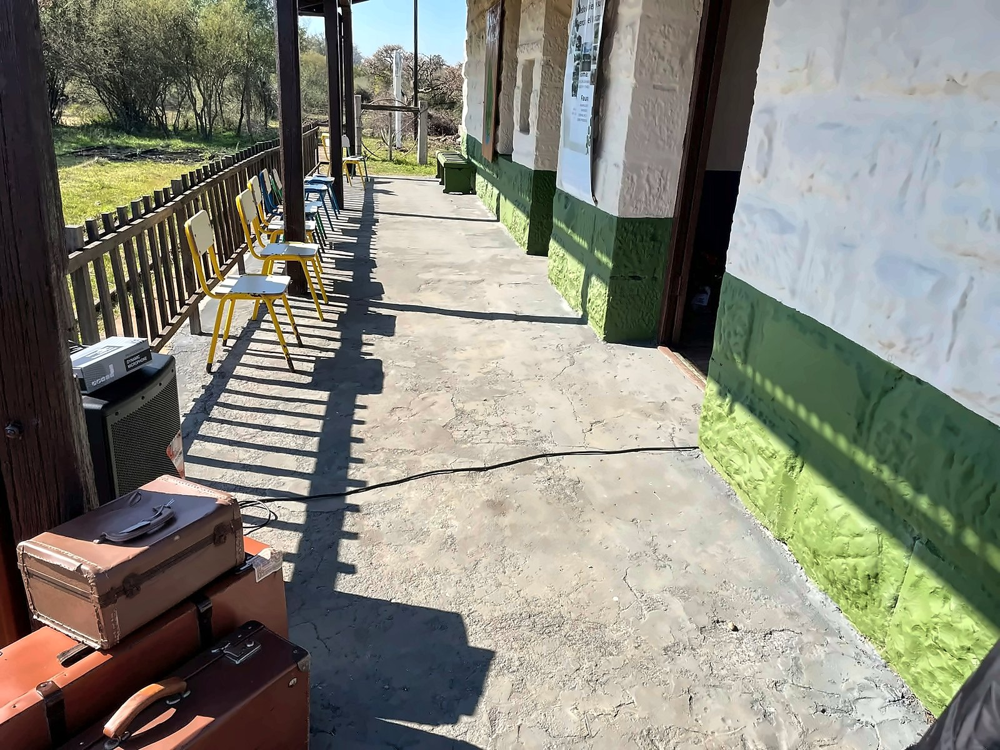
Foto: CEI Javier de Viana
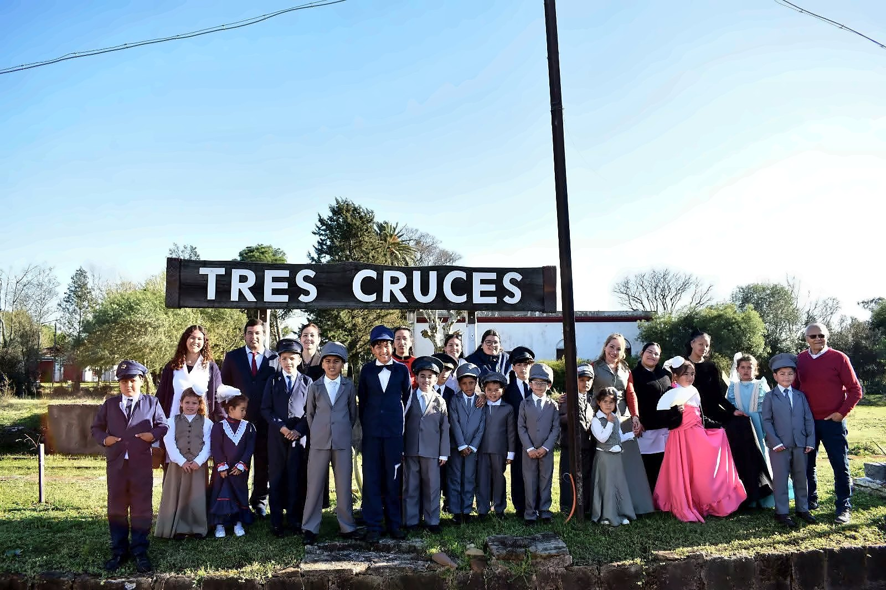
Foto: CEI Javier de Viana
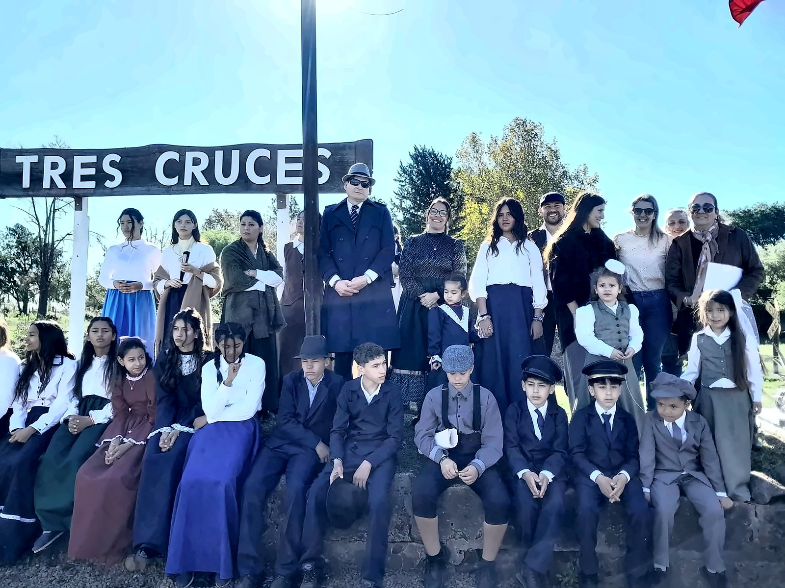
Foto: CEI Javier de Viana
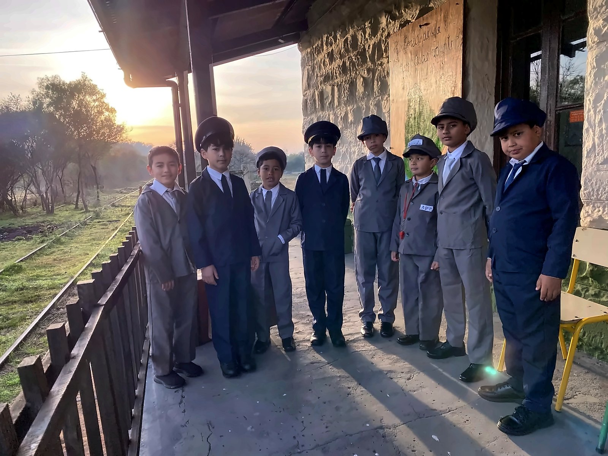
Foto: CEI Javier de Viana
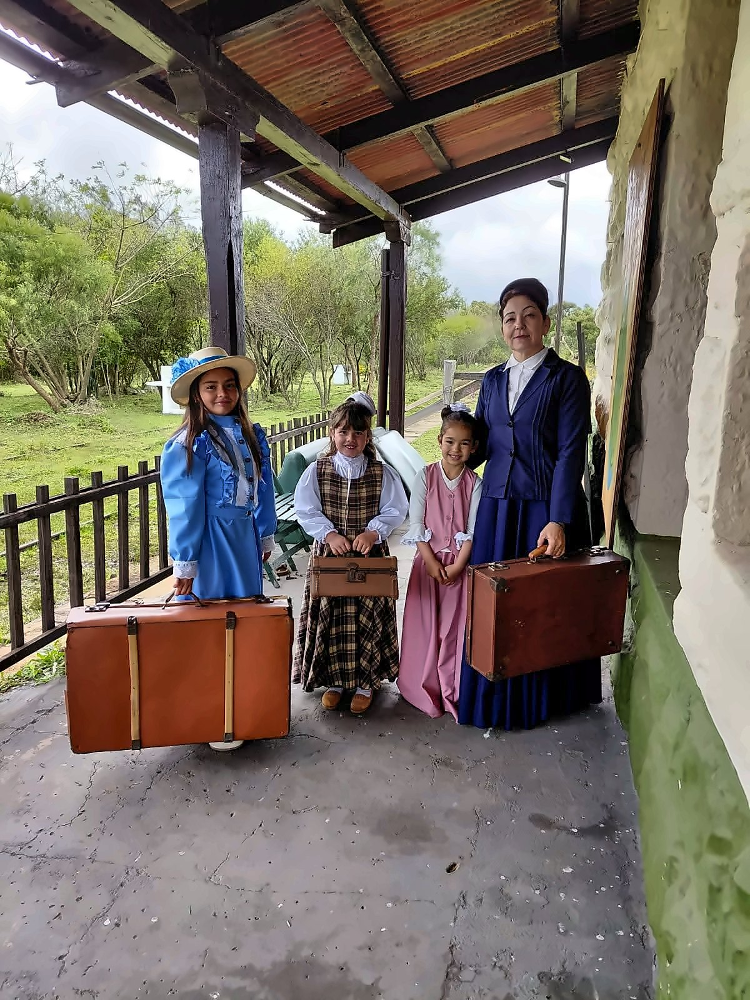
Foto: CEI Javier de Viana
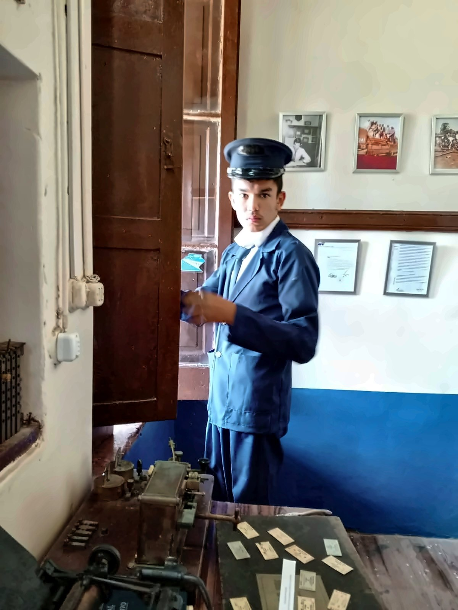
Foto: CEI Javier de Viana
Foto: CEI Javier de Viana
Foto: CEI Javier de Viana
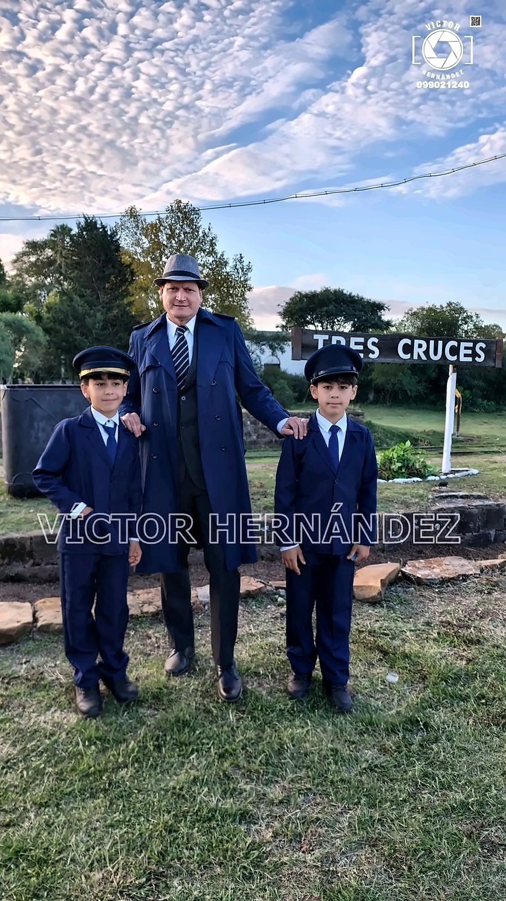
Foto: Víctor Hernández
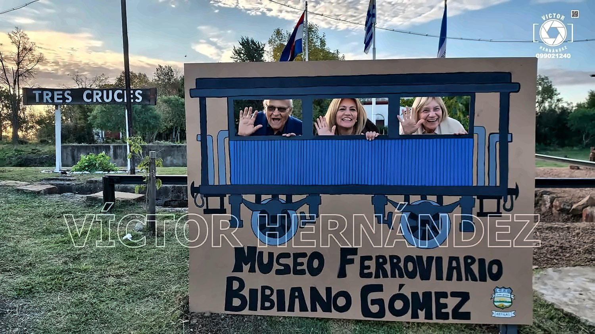
Foto: Víctor Hernández
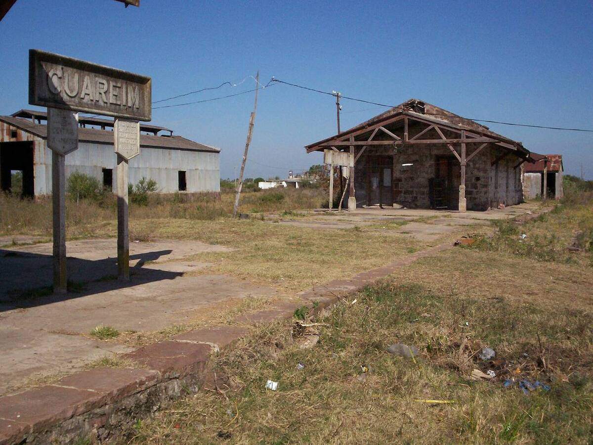
Foto: Ulises Icardi · CC BY-SA 4.0 · Foto de referencia
Foto: Gerardo c · Dominio público · Foto de referencia
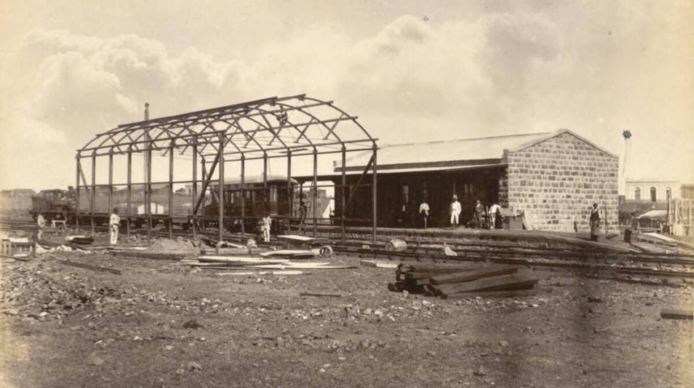
Foto: John Fitz Patrick · CC0 · Foto de referencia